overview of space
description::
· space is the-continuous structure of the-Universe.
name::
* McsEngl.McsCor000007.last.html//dirCor//dirMcs!⇒space,
* McsEngl.dirMcs/dirCor/McsCor000007.last.html!⇒space,
* McsEngl.space,
* McsEngl.space!=McsCor000007,
====== langoSinago:
* McsSngo.do!=space,
====== langoChinese:
* McsZhon.kōngjiān-空间!=space,
* McsZhon.空间-kōngjiān!=space,
====== langoGreek:
* McsElln.χώρος!ο!=space,
====== langoTurkish:
* McsTurk.uzay!=space,
namingA of space
description::
· the-naming-action of a-place.
* lagSngo:
· doName,
* lagElla:
· γυμνασία (= γύμναση) => γυμνάσ-ιον (= ο τόπος όπου γινόταν η γύμναση, γυμναστήριο),
· γραφεύς => γραφεῖον (από το γραφέ-ιον),
· ἰατρός => ἰατρ-εῖον,
[{2022-08-18 retrieved} https://synagonism.net/dirMcs/dirLag/dirHitp/HitpLag000.last.html#idGaikP386]
· ἐλαία => ἐλαι-ών,
· μύρμηξ (μύρμηκ-ος) => μυρμηκ-ιά,
name::
* McsEngl.namingA.space,
dimension of space
description::
· dimension-of-space is any attribute needed to identify any space-point.
· length, width, height.
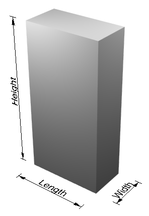
"A cuboid demonstrating the dimensions length, width, and height"
[https://en.wikipedia.org/wiki/Height#/media/File:Height_demonstration_diagram.png]
name::
* McsEngl.dimension-of-space,
* McsEngl.space'dimension,
relation of space
description::
· space-relation is a-relation of a-space and an-entity.
=== at!~conjEngl!=rlnSpace:
· _stxEngl: At the feast, we will eat heartily. [(At) the feast], [we] _stxVrb:{will eat} [heartily].
=== zài-在!~conjZhon!=rlnSpace:
· _stxZhon: 他 在 美国。 :: _stxSbj:[Tā] _stxSpace:[(zài) měiguó]。 != [he] [(in) America].
· _stxZhon: 妈妈 在 家。 :: _stxSbj:[māmā] _stxSpace:[(zài) jiā]。 != [mom] [(at) home].
· _stxZhon: 我 在 上海 上 大学。 :: _stxSbj:[Wǒ] _stxSpace:[zài Shànghǎi] _stxVrb:{shàng} _stxObj:[dàxué]. != I went to college in Shanghai. != Πηγαίνω στο πανεπιστήμιο στη Σαγκάη.
=== Subj + [住(zhù), 放(fàng), 坐(zuò), 站(zhàn)] + 在 Location:
· _stxZhon: 你 住 在 上海吗？ _stxSbj:[Nǐ] _stxVrb:{zhù} _stxObj:[zài Shànghǎi] {ma}? != Do you live in Shanghai?
=== dào-到!~verbZhon!=dngArriving:
· _stxZhon: 他们 已经 到 酒吧 了。 : _stxSbj:[Tāmen] _stxTime:[yǐjīng] _stxVrb:{dào} _stxSpace:[jiǔbā] {le}. != They have already arrived at the bar.
name::
* McsEngl.at!~conjEngl!=rlnSpace,
* McsEngl.being-rlnSpace,
* McsEngl.verb.be!~verbEngl!=rlnSpace,
* McsEngl.relation.space,
* McsEngl.rlnSpace,
* McsEngl.space-relation,
* McsEngl.stxSpace,
* McsEngl.syntax.space,
* McsEngl.conjEngl.at!=rlnSpace,
* McsZhon.conjZhon.zài-在!=rlnSpace,
====== langoChinese:
* McsZhon.zài-在!~conjZhon!=rlnSpace,
* McsZhon.在-zài!~conjZhon!=rlnSpace,
====== langoSinago:
* McsSngo.ro-do!=rlnSpace,
* McsSngo.conjSngo.da!=rlnSpace,
* McsSngo.da!~conjSngo!=rlnSpace,
info-resource of space
name::
* McsEngl.space'Infrsc,
addressWpg::
*
EVOLUTING of space
name::
* McsEngl.evoluting-of-space,
* McsEngl.space'evoluting,
{2019-09-19}::
=== McsHitp-creation:
· creation of current concept.
space.SPECIFIC
name::
* McsEngl.space.specific,
specific::
* place,
* semo-space,
* definite-space,
* definiteNo-space,
* relative-space,
* relativeNo-space,
* point-space,
* pointNo-space,
* space1,
* space2,
* space3,
space.reference
description::
· denotes anonymously deictic (= esophoric or exophoric) space or interrogativly.
* deictic,
* interrogative,
name::
* McsEngl.reference.space,
* McsEngl.space.reference,
space.reference.interrogative
description::
· space reference interrogative.
* adverb:
· _stxEngl: _stxSpace:[where] _stxVrb:{do _stxSbj:[we] go} _stxDirection:[from here]?
· stxZhon:
name::
* McsEngl.askSpace,
* McsEngl.pronAskEngl.where:spaceAsk,
* McsEngl.pronAskSpace,
* McsEngl.spaceAsk,
* McsEngl.space.interrogative,
* McsEngl.space.reference.interrogative,
* McsEngl.spaceSms.interrogative,
* McsEngl.adveEngl.where!=spaceAsk,
* McsEngl.where!~adveEngl!=spaceAsk,
====== langoSinago:
* McsSngo.do-cio!=spaceAsk,
====== langoChinese:
* McsZhon.nǎlǐ-哪里-(哪裡)!=spaceAsk,
* McsZhon.nǎr-哪儿-(哪兒)!=spaceAsk,
* McsZhon.哪里-(哪裡)-nǎlǐ!=spaceAsk,
* McsZhon.哪儿-(哪兒)-nǎr!=spaceAsk,
====== langoGreek:
* McsElln.επίρρημα.που!=spaceAsk,
* McsElln.που!~adveElln!=spaceAsk,
space.reference.deictic
description::
· space, reference, definite, deictic.
name::
* McsEngl.deicticSpace,
* McsEngl.space.deictic,
* McsEngl.spaceDeictic,
* McsEngl.space.definite.deictic,
* McsEngl.space.reference.interrogativeNo,
====== langoSinago:
* McsSngo.do-dhio!=space.deictic,
space.deictic.near-personA
description::
· space, exophoric, near personA.
=== zhè'er-这儿!=spaceDeicticNearA:
· _stxZhon: 你的书在这儿。 :: Nǐ de shū zài zhèr. != Your book is here.
name::
* McsEngl.adveEngl.here!=spaceDeicticNearA,
* McsEngl.here!~adveEngl!=spaceDeicticNearA,
* McsEngl.space.deictic.near-personA,
* McsEngl.spaceDeicticNearA,
====== langoChinese:
* McsZhon.zhè'er-这儿!=spaceDeicticNearA,
* McsZhon.zhèlǐ-这里!=spaceDeicticNearA,
* McsZhon.这儿-zhè'er!=spaceDeicticNearA,
* McsZhon.这里-zhèlǐ!=spaceDeicticNearA,
====== langoGreek:
* McsElln.επίρρημα.εδώ!=spaceDeicticNearA,
* McsElln.εδώ!~adveElln!=spaceDeicticNearA,
space.deictic.nearNo-personA
description::
· space deictic nearNo personA.
name::
* McsEngl.adveEngl.there!=spaceDeicticNearNoA,
* McsEngl.there!~adveEngl!=spaceDeicticNearNoA,
* McsEngl.space.deictic.nearNo-personA,
* McsEngl.spaceDeicticNearNoA,
====== langoChinese:
* McsZhon.nàlǐ-那里!=spaceDeicticNearNoA,
* McsZhon.那里-nàlǐ!=spaceDeicticNearNoA,
====== langoGreek:
* McsElln.εκεί!=spaceDeicticNearNoA,
space.deictic.near-personB
description::
·
name::
* McsEngl.space.deictic.near-personB,
space.deictic.nearNo-personB
description::
·
name::
* McsEngl.space.deictic.nearNo-personB,
space.place
description::
· place is a-specific individual space.
=== where!~conjEngl!=rlnSpacePlace:
· _stxEngl: _stxSbj:[I] _stxVrb:{know} _stxSpace:[(where) _stxSbj:[he] _stxVrb:{is}]. [WordNet 2.0]
· _stxEngl: _stxVrb:{show} _stxObj:[me] _stxSpace:[(where) [the business] _stxVrb:{was} [today]]. [WordNet 2.0]
=== dìfāng-地方!=place:
· _stxZhon: _stxSbj:[她] _stxVrb:{去了} _stxSpace:[[中国][很多地方]]。 Tā qùle zhōngguó hěnduō dìfāng. != [she] {went} [[in China][to many places]].
name::
* McsEngl.location!⇒place,
* McsEngl.place,
* McsEngl.place.Elln!=τοποθεσία!η,
* McsEngl.place.Sqip!=vend,
* McsEngl.place.Turk!=yer,
* McsEngl.rlnSpacePlace,
* McsEngl.space.individual!⇒place,
* McsEngl.space.location!⇒place,
* McsEngl.space.place!⇒place,
====== langoChinese:
* McsZhon.dìdiǎn-地点!=place-specific,
* McsZhon.地点-dìdiǎn!=place-specific,
* McsZhon.dìfāng-地方!=place-broad,
* McsZhon.地方-dìfāng!=place-broad,
====== langoGreek:
* McsElln.θέση!η!=place,
* McsElln.μέρος!το!=place,
* McsElln.τοποθεσία!η!=place,
====== langoTurkish:
* McsTurk.yer!=place,
toponym of place
description::
· the-name of a-place.
name::
* McsEngl.name.toponym!⇒toponym,
* McsEngl.geographic-name!⇒toponym,
* McsEngl.toponym,
* McsEngl.placename!⇒toponym,
====== langoChinese:
* McsZhon.dìmíng-地名!=toponym,
* McsZhon.地名-dìmíng!=toponym,
====== langoEsperanto:
* McsEspo.loknomo!=toponym,
====== langoGreek:
* McsElln.γεωγραφικό-όνομα!το!=toponym,
* McsElln.τοπωνυμία!η!=toponym,
* McsElln.τοπωνύμιο!το!=toponym,
address of place
description::
· the-name of the-place.
"In most of the world, addresses are written in order from most specific to general, i.e. finest to coarsest information, starting with the addressee and ending with the largest geographical unit."
[{2020-08-31} https://en.wikipedia.org/wiki/Address]
· _stxZhon: _stxSbj:[我] _stxVrb:{忘了} _stxObj:[他(的)地址]。 Wǒ wàngle tā dì dìzhǐ. != [I] {forgot} [his address].
name::
* McsEngl.address-of-place,
* McsEngl.place'address,
====== langoChinese:
* McsZhon.dìzhǐ-地址!=address-of-place,
* McsZhon.地址-dìzhǐ!=address-of-place,
====== langoEsperanto:
* McsEspo.adreso!=address-of-place,
====== langoGreek:
* McsElln.διεύθυνση-τοποθεσίας!η!=address-of-place,
geographic-coordinates of place
description::
· the-latitude and the-longitude of a-place, for example:
· 39°42'04.6"N 20°47'14.0"E in degrees, minutes and seconds format.
· 39.701267, 20.787224 in decimal-format.
name::
* McsEngl.coordinates-of-place,
* McsEngl.place'coordinates,
* McsEngl.place'geographic-coordinates,
rlnPlace.doing
description::
· the-place of a-doing|event.
=== zài..shàng-在..上!~conjZhon!=rlnPlaceDoing:
· _stxZhon: 在 会议 上 :: zài huìyì shàng != at the meeting
· _stxZhon: 在 婚礼 上 :: zài hūnlǐ shàng != at the wedding
· _stxZhon: 在 课 上 :: zài kè shàng != in class
name::
* McsEngl.rlnPlaceDoing,
* McsZhon.conjZhon.zài..shàng-在..上!=rlnPlaceDoing,
====== langoChinese:
* McsZhon.zài..shàng-在..上!~conjZhon!=rlnPlaceDoing,
* McsZhon.在..上-zài..shàng!~conjZhon!=rlnPlaceDoing,
====== langoGreek:
* McsElln.στο:-ο-η-ο!~conjZhon!=rlnPlaceDoing,
space.definite
description::
· definite-space is space with clear boundaries.
name::
* McsEngl.space.definite,
specific::
* deictic,
* none-quantity,
space.def.named
description::
· named-space is a-space with a-name.
name::
* McsEngl.named-space,
* McsEngl.space.named,
specific::
* Earth-surface-named,
space.def.quantity.none
description::
· space definite, quantity.none.
name::
* McsEngl.adveEngl.nowhere!=spaceNone,
* McsEngl.nowhere!~adveEngl!=spaceNone,
* McsEngl.space.none,
* McsEngl.space.definite.quantity.none,
* McsEngl.spaceNone,
====== langoChinese:
* McsZhon.wúchù-无处-(無處)!=spaceNone,
* McsZhon.无处-(無處)-wúchù!=spaceNone,
====== langoGreek:
* McsElln.πουθενά!=spaceNone,
space.def.quantity.all
description::
· space definite, quantity.all,
name::
* McsEngl.adveEngl.everywhere!=spaceAll,
* McsEngl.everywhere!~adveEngl!=spaceAll,
* McsEngl.space.all,
* McsEngl.space.definite.quantity.all,
* McsEngl.spaceAll,
====== langoChinese:
* McsZhon.dàochù-到处!=spaceAll,
* McsZhon.dàochùdōu-到处都!=spaceAll,
* McsZhon.到处-dàochù!=spaceAll,
* McsZhon.到处都-dàochùdōu!=spaceAll,
====== langoGreek:
* McsElln.παντού!=spaceAll,
space.definiteNo
description::
·
name::
* McsEngl.definiteNo-space,
* McsEngl.indefinite-space,
* McsEngl.space.definiteNo,
space.defNo.quantity.one
description::
· space, definiteNo, quantityOne.
name::
* McsEngl.a-place,
* McsEngl.somewhere,
* McsEngl.space.definiteNo.quantity.one,
* McsEngl.spaceSms.definiteNo.quantity.one,
space.defNo.quantity.oneNo
description::
· space, definiteNo, quantityOneNo.
name::
* McsEngl.some-places,
* McsEngl.space.definiteNo.quantity.oneNo,
* McsEngl.spaceSms.definiteNo.quantity.oneNo,
space.defNo.quantity.any
description::
· space definiteNo.quantity.any.
name::
* McsEngl.adveEngl.anywhere!=spaceAny,
* McsEngl.anywhere!~adveEngl!=spaceAny,
* McsEngl.space.definiteNo.quantity.any,
* McsEngl.spaceAny,
====== langoGreek:
* McsElln.οπουδήποτε!=spaceAny,
space.relative
description::
· relative-space is space defined in relation to another space.
name::
* McsEngl.relative-space,
* McsEngl.rlnSpaceSpace,
* McsEngl.space.relative,
====== langoSinago:
* McsSngo.do-tio!=space.relative,
====== langoChinese:
* McsZhon.fāngwèicí-方位词!=rlnSpaceSpace:position-word,
* McsZhon.方位词-fāngwèicí!=rlnSpaceSpace,
· "The little words that come after the location in the phrases above aren't really "prepositions." They are called "nouns of locality," or 方位词 (fāngwèicí) in Chinese. They actually tend to have several forms, which can be confusing if you're not used to them."
[{2023-07-09 retrieved} https://resources.allsetlearning.com/chinese/grammar/Expressing_location_with_%22zai..._shang_/_xia_/_li%22]
====== langoGreek:
* McsElln.χώρος.σχετικός,
space.rltv.across
description::
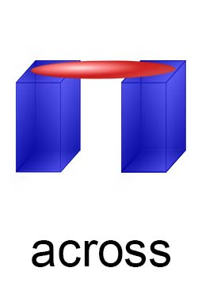
· space-across-space is space at right-angle in-relation-to another space.
· _stxEngl: _stxSbj:[There] _stxVrb:{is} _stxSbjc:[a bridge] _stxSpace:[(across) the river].
· _stxEngl: _stxSbj:[The red bar] _stxVrb:{is lying} _stxSpace:[(across) the blue boxes].
[https://www.englishpage.com/prepositions/position_prepositions.htm]
===
"(adv) transversely, transversally (in a transverse manner) "they were cut transversely""
[http://wordnetweb.princeton.edu/perl/webwn?s=transversely]
"(adj) crosswise (in the shape of (a horizontal piece on) a cross)"
"(adv) across, crosswise, crossways (transversely) "the marble slabs were cut across""
[http://wordnetweb.princeton.edu/perl/webwn?s=crosswise]
name::
* McsEngl.across-space,
* McsEngl.crosswise-space,
* McsEngl.space.across-space,
* McsEngl.across!~conjEngl!=rlnSpaceAcross,
* McsEngl.conjEngl.across!=rlnSpaceAcross,
* McsEngl.rlnSpaceAcross,
* McsEngl.transversely-space,
====== langoSinago:
* McsSngo.do-crosa-do!=rlnSpaceAcross,
====== langoGreek:
* McsElln.επίθετο.εγκάρσιος!=-ος-α-ο,
* McsElln.εγκάρσιος!~adjeElln!=-ος-α-ο,
space.rltv.above
description::
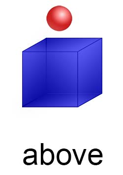
· _stxEngl: _stxSbj:[The red ball] _stxVrb:{is} _stxSpace:[(above) the blue box].
[https://www.englishpage.com/prepositions/position_prepositions.htm]
name::
* McsEngl.above-space,
* McsEngl.over-space,
* McsEngl.space.above-space,
* McsEngl.above!~conjEngl!=rlnSpaceAbove,
* McsEngl.conjEngl.above!=rlnSpaceAbove,
* McsEngl.rlnSpaceAbove,
* McsEngl.rlnSpaceAbove,
* McsEngl.space.over-space,
* McsEngl.conjEngl.over!=rlnSpaceAbove,
space.rltv.below
description::
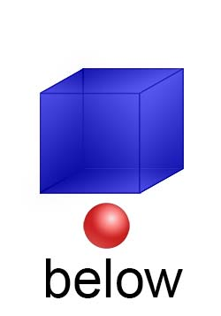
· _stxEngl: _stxSbj:[The red ball] _stxVrb:{is} _stxSpace:[(below) the blue box].
[https://www.englishpage.com/prepositions/position_prepositions.htm]
=== κάτω-από!~conjElln!=rlnSpaceRltvBelow:
· _stxElln: είχε απαγορευτεί η κυκλοφορία κάτω από τη γέφυρα.
name::
* McsEngl.below-space,
* McsEngl.below!~conjEngl!=rlnSpaceRltvBelow,
* McsEngl.beneath!~conjEngl!=rlnSpaceRltvBelow,
* McsEngl.beneath-space,
* McsEngl.rlnSpaceRltvBelow,
* McsEngl.space.below-space,
* McsEngl.space.beneath-space,
* McsEngl.spaceRltvBelow,
* McsEngl.conjEngl.below!=rlnSpaceRltvBelow,
* McsEngl.conjEngl.beneath!=rlnSpaceRltvBelow,
====== langoGreek:
* McsElln.κάτω-από!~conjElln!=rlnSpaceRltvBelow,
space.rltv.on
description::
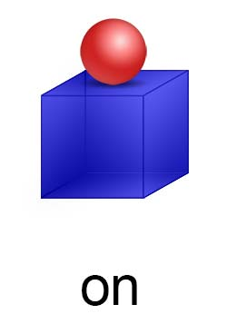
· _stxEngl: _stxSbj:[The red ball] _stxVrb:{is} _stxSpace:[(on) the blue box].
[https://www.englishpage.com/prepositions/position_prepositions.htm]
=== 在..上-zài..shàng!~conjZhon!=rlnSpaceOn:
· _stxZhon: 在 桌子 上 。 :: zài zhuōzi shàng != on the table
name::
* McsEngl.on-space,
* McsEngl.space.on-space,
* McsEngl.on!~conjEngl!=rlnSpaceOn,
* McsEngl.conjEngl.on!=rlnSpaceOn,
* McsEngl.rlnSpaceOn,
====== langoChinese:
* McsZhon.在..上-zài..shàng!~conjZhon!=rlnSpaceOn,
====== langoGreek:
* McsElln.πάνω-στο!~conjElln!=rlnSpaceOn,
space.rltv.under
description::
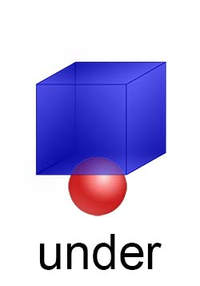
· _stxEngl: _stxSbj:[The red ball] _stxVrb:{is} _stxSpace:[(under) the blue box].
[https://www.englishpage.com/prepositions/position_prepositions.htm]
name::
* McsEngl.under-space,
* McsEngl.underneath-space,
* McsEngl.space.under-space,
* McsEngl.under!~conjEngl!=rlnSpaceUnder,
* McsEngl.conjEngl.under!=rlnSpaceUnder,
* McsEngl.rlnSpaceUnder,
* McsEngl.rlnSpaceUnder,
* McsEngl.space.underneath-space,
* McsEngl.conjEngl.underneath!=rlnSpaceUnder,
space.rltv.against
description::
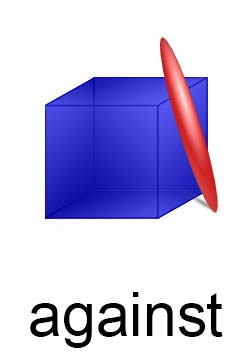
· _stxEngl: _stxSbj:[The red bar] _stxVrb:{is lying} _stxSpace:[(against) the blue box].
[https://www.englishpage.com/prepositions/position_prepositions.htm]
· _stxEngl: _stxVrb:{threw} _stxObj:[him] _stxSpace:[(against) the wall].
name::
* McsEngl.against-space,
* McsEngl.space.against-space,
* McsEngl.against!~conjEngl!=rlnSpaceAgainst,
* McsEngl.conjEngl.against!=rlnSpaceAgainst,
* McsEngl.rlnSpaceAgainst,
space.rltv.opposite
description::
· in a-space on the-other side of a-specific-space.
· _stxEngl: _stxSbj:[Their house] _stxVrb:{is} _stxSpace:[(opposite) the Red Cross Hospital].
· _stxElla: _stxVrb:_stxVrb:{Ειστήκεσαν} _stxSpace:[(ἀντὶ) τῶν πιτύων]. ==> _stxVrb:{είχαν σταθεί} _stxSpace:[(απέναντι από) τα πεύκα].
name::
* McsEngl.opposite-space,
* McsEngl.space.opposite-space,
* McsEngl.space.conjElla.ἀντὶ!=rlnSpaceOpposite,
* McsEngl.space.conjElln.απένταντι-από!=rlnSpaceOpposite,
* McsEngl.space.conjEngl.opposite!=rlnSpaceOpposite,
space.rltv.among
description::
· _stxEngl: _stxSbj:[The red ball] _stxVrb:{is} _stxSpace:[(among) the blue box].
[https://www.englishpage.com/prepositions/position_prepositions.htm]
name::
* McsEngl.among-space,
* McsEngl.space.among-space,
* McsEngl.among!~conjEngl!=rlnSpaceAmong,
* McsEngl.conjEngl.among!=rlnSpaceAmong,
* McsEngl.conjEngl.around!=rlnSpaceAround,
* McsEngl.round!~conjEngl!=rlnSpaceAround,
* McsEngl.conjEngl.round!=rlnSpaceAround,
* McsEngl.conjEngl.between!=rlnSpaceBetween,
* McsEngl.conjEngl.behind!=rlnSpaceBehind,
* McsEngl.rlnSpaceBehind,
space.rltv.in-front-of
description::
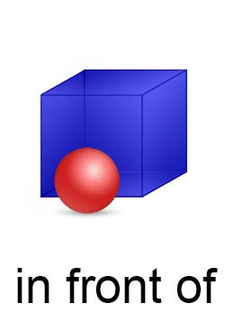
· _stxEngl: _stxSbj:[The red ball] _stxVrb:{is} _stxSpace:[(in-front-of) the blue box].
[https://www.englishpage.com/prepositions/position_prepositions.htm]
· _stxEngl: _stxSbj:[She] _stxVrb:{walked} _stxSpace:[[(ahead of) Helene] [(up) the steps] [(into) the hotel]]. [HarperCollins]
· _stxZhon: 汽车前边没有人。 :: _stxSbj:[Qìchē] _stxSpace:[qiánbian] _stxVrb:{méiyǒu} rén.。 != in front of the car there is no man.
name::
* McsEngl.ahead-of!~conjEngl!=rlnSpaceAheadof,
* McsEngl.conjEngl.ahead-of!=rlnSpaceAheadof,
* McsEngl.conjEngl.in-front-of!=rlnSpaceAheadof,
* McsEngl.in-front-of!~conjEngl!=rlnSpaceAheadof,
* McsEngl.rlnSpaceAheadof,
* McsEngl.space.ahead-of--space,
* McsEngl.space.in-front-of-space,
* McsEngl.spaceAheadof,
====== langoChinese:
* McsEngl.adveZhon.qiánbian-前边!=spaceAheadof,
* McsZhon.qiánbian-前边!~adveZhon!=spaceAheadof,
* McsZhon.前边-qiánbian!~adveZhon!=spaceAheadof,
====== langoGreek:
* McsElln.επίρρημα.μπροστά!=spaceAheadof,
* McsElln.μπροστά!~adveElln!=spaceAheadof,
space.rltv.behind
description::
× McsHitp-creation: {2024-12-12},
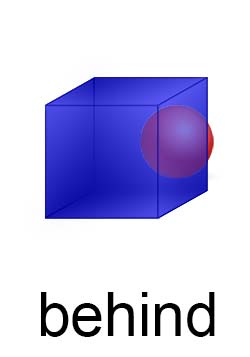
name::
* McsEngl.rlnSpaceBehind,
* McsEngl.space.rltv.behide!⇒rlnSpaceBehind,
space.rltv.beside
description::
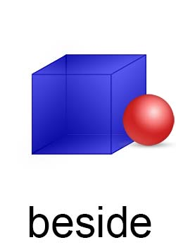
· _stxEngl: _stxSbj:[The red ball] _stxVrb:{is} _stxSpace:[(beside) the blue box].
[https://www.englishpage.com/prepositions/position_prepositions.htm]
=== zài..pángbiān-在..旁边!~conjZhon!=rlnSpaceBeside:
· _stxZhon: Walmart 在 我家 旁边 。 :: Walmart zài wǒ jiā pángbiān. != Walmart is next to my house.
name::
* McsEngl.beside-space,
* McsEngl.beside!~conjEngl!=rlnSpaceBeside,
* McsEngl.next-to-space,
* McsEngl.rlnSpaceBeside,
* McsEngl.space.beside-space,
* McsEngl.space.next-to-space,
* McsEngl.conjEngl.beside!=rlnSpaceBeside,
* McsEngl.conjEngl.next-to!=rlnSpaceBeside,
* McsZhon.conjZhon.zài..pángbiān-在..旁边!=rlnSpaceBeside,
====== langoChinese:
* McsZhon.zài..pángbiān-在..旁边!~conjZhon!=rlnSpaceBeside,
* McsZhon.在..旁边-zài..pángbiān!~conjZhon!=rlnSpaceBeside,
====== langoGreek:
* McsElln.δίπλα-στο!~conjElln!=rlnSpaceBeside,
space.rltv.beyond
description::
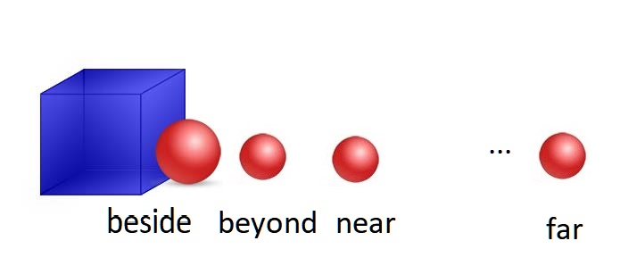
name::
* McsEngl.beyond-space,
* McsEngl.space.beyond-space,
* McsEngl.beyond!~conjEngl!=rlnSpaceBeyond,
* McsEngl.conjEngl.beyond!=rlnSpaceBeyond,
* McsEngl.rlnSpaceBeyond,
====== langoGreek:
* McsElln.παραπέρα,
space.rltv.near
description::
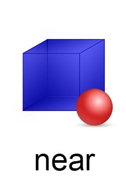
· _stxEngl: _stxSbj:[The red ball] _stxVrb:{is} _stxSpace:[(near) the blue box].
[https://www.englishpage.com/prepositions/position_prepositions.htm]
· _stxEngl: _stxSbj:[He] _stxVrb:{lives} _stxSpace:[(by) a train station].
=== jìn-近:
· _stxZhon: 我 家 离 公司 很 近。 :: _stxSbj:[Wǒ jiā (lí) gōngsī] _stxSbjc:[hěn jìn]. != My house is close to my office.
name::
* McsEngl.space.by-space,
* McsEngl.space.near-space,
* McsEngl.by!~conjEngl!=rlnSpaceNear,
* McsEngl.near!~conjEngl!=rlnSpaceNear,
* McsEngl.rlnSpaceNear,
* McsEngl.conjEngl.by!=rlnSpaceNear,
* McsEngl.conjEngl.near!=rlnSpaceNear,
====== langoChinese:
* McsZhon.fùjìn-附近!=rlnSpaceNear,
* McsZhon.附近-fùjìn!=rlnSpaceNear,
* McsZhon.jìn-近!=rlnSpaceNear,
* McsZhon.近-jìn!=rlnSpaceNear,
====== langoGreek:
* McsElln.κοντά-σε!=rlnSpaceNear,
space.rltv.far-from
description::
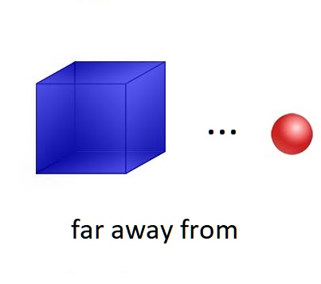
· _stxEngl: _stxSbj:[The red ball] _stxVrb:{is} _stxSpace:[(far-away-from) the blue box].
· _stxEngl: _stxSbj:[The Great Barrier Reef, _stxSpace:[(off) the northeast coast]], _stxVrb:{is renouned} _stxArg:[(for) skindiving, and big game fishing].
· _stxEngl: _stxSbj:[I] _stxVrb:{happened} _stxObj:[upon the most wonderful bakery] _stxSpace:[not very [(far from) here]]. [WordNet 2.0]
=== yuǎn-远:
· _stxZhon: 美国 离 中国 很 远。 :: _stxSbj:[Měiguó (lí) Zhōngguó] _stxSbjc:[hěn yuǎn]. != The USA is far from China.
name::
* McsEngl.far-away-from-space,
* McsEngl.space.far-away-from-space,
* McsEngl.far-away-from!~conjEngl!=rlnSpaceFar,
* McsEngl.conjEngl.far-away-from!=rlnSpaceFar,
* McsEngl.far-from!~conjEngl!=rlnSpaceFar,
* McsEngl.conjEngl.far-from!=rlnSpaceFar,
* McsEngl.off!~conjEngl!=rlnSpaceFar,
* McsEngl.conjEngl.off!=rlnSpaceFar,
* McsEngl.rlnSpaceFar,
====== langoChinese:
* McsEngl.adjeZhon.yuǎn-远!=rlnSpaceFar,
* McsZhon.yuǎn-远!~adjeZhon!=rlnSpaceFar,
* McsZhon.远-yuǎn!~adjeZhon!=rlnSpaceFar,
space.rltv.inside
description::
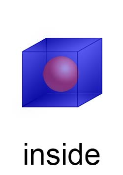
· _stxEngl: _stxSbj:[The red ball] _stxVrb:{is} _stxSpace:[(inside) the blue box].
[https://www.englishpage.com/prepositions/position_prepositions.htm]
· _stxEngl: _stxSbj:[Clients] _stxVrb:{are entertained} _stxSpace:[(within) private dining rooms]. [HarperCollins]
name::
* McsEngl.inside-space,
* McsEngl.space.inside-space,
* McsEngl.inside!~conjEngl!=rlnSpaceInside,
* McsEngl.conjEngl.inside!=rlnSpaceInside,
* McsEngl.within!~conjEngl!=rlnSpaceInside,
* McsEngl.conjEngl.within!=rlnSpaceInside,
* McsEngl.rlnSpaceInside,
====== langoSinago:
* McsSngo.do-esa-do!=space.inside-space,
space.rltv.outside
description::
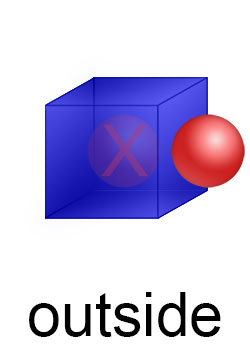
· _stxEngl: _stxSbj:[The red ball] _stxVrb:{is} _stxSpace:[(outside) the blue box].
[https://www.englishpage.com/prepositions/position_prepositions.htm]
name::
* McsEngl.outside-space,
* McsEngl.space.outside-space,
* McsEngl.outside!~conjEngl!=rlnSpaceOutside,
* McsEngl.conjEngl.outside!=rlnSpaceOutside,
* McsEngl.rlnSpaceOutside,
====== langoSinago:
* McsSngo.do-eza-do!=rlnSpaceOutside,
space.rltv.in
description::
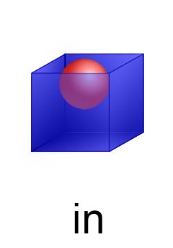
· _stxEngl: _stxSbj:[The red ball] _stxVrb:{is} _stxSpace:[(in) the blue box].
[https://www.englishpage.com/prepositions/position_prepositions.htm]
=== zài..lǐ-在..里!~conjZhon!=rlnSpaceIn:
· _stxZhon: 你 的 手机 在 包 里 吗 ？ :: Nǐ de shǒujī zài bāo lǐ ma? != Is your cell phone in the bag?
name::
* McsEngl.in-space,
* McsEngl.space.in-space,
* McsEngl.in!~conjEngl!=rlnSpaceIn,
* McsEngl.conjEngl.in!=rlnSpaceIn,
* McsEngl.rlnSpaceIn,
* McsZhon.conjZhon.zài..lǐ-在..里!=rlnSpaceIn,
====== langoChinese:
* McsZhon.zài..lǐ-在..里!~conjZhon!=rlnSpaceIn,
* McsZhon.在..里-zài..lǐ!~conjZhon!=rlnSpaceIn,
====== langoGreek:
* McsElln.μέσα-στο!~conjElln!=rlnSpaceIn,
space.rltv.through
description::
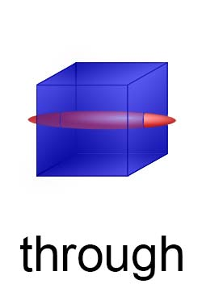
· _stxEngl: _stxSbj:[The red ball] _stxVrb:{is running} _stxSpace:[(through) the blue box].
[https://www.englishpage.com/prepositions/position_prepositions.htm]
name::
* McsEngl.through-space,
* McsEngl.space.through-space,
* McsEngl.through!~conjEngl!=rlnSpaceThrough,
* McsEngl.conjEngl.through!=rlnSpaceThrough,
* McsEngl.conjEngl.throughout!=rlnSpaceThroughout,
* McsEngl.rlnSpaceThroughout,
space.rltv.elsewhere
description::
· elsewhere is space different than the-space of context.
name::
* McsEngl.elsewhere-space,
* McsEngl.space.elsewhere,
* McsEngl.rlnSpaceElsewhere,
=== langoGreek:
* McsElln.αλλού!~advb,
space.rltv.left
description::
· left-space is space on the-left-hand of the-person in context.
name::
* McsEngl.left-space,
* McsEngl.rlnSpaceLeft,
* McsEngl.space.left,
* McsEngl.spaceLeft,
====== langoChinese:
* McsZhon.zuǒ-左!=spaceLeft,
* McsZhon.左-zuǒ!=spaceLeft,
====== langoEsperanto:
* McsEspo.maldekstren!=spaceLeft,
=== langoGreek:
* McsElln.επίρρημα.αριστερά!=spaceLeft,
* McsElln.αριστερά!~adveElln!=spaceLeft,
space.rltv.right
description::
· right-space is space on the-right-hand of the-person in context.
name::
* McsEngl.right-space,
* McsEngl.rlnSpaceRight,
* McsEngl.space.right,
* McsEngl.spaceRight,
====== langoChinese:
* McsZhon.yòu-右!=spaceRight,
* McsZhon.右-yòu!=spaceRight,
====== langoEsperanto:
* McsEspo.dekstren!=spaceRight,
=== langoGreek:
* McsElln.επίρρημα.δεξιά!=spaceRight,
* McsElln.δεξιά!~adveElln!=spaceRight,
space.rltv.east
description::
· east-space is definiteNo space relative to current-space and the-direction of the-sunrise.
name::
* McsEngl.east-space,
* McsEngl.space.relative.east,
* McsEngl.rlnSpaceEast,
space.rltv.west
description::
· west-space is definiteNo space relative to current-space and the-direction of the-sunset.
name::
* McsEngl.space.relative.west,
* McsEngl.west-space,
* McsEngl.rlnSpaceWest,
space.rltv.north
description::
· north-space is definiteNo space relative to current-space and the-direction left of the-sunrise.
name::
* McsEngl.north-space,
* McsEngl.space.relative.north,
* McsEngl.rlnSpaceNorth,
====== langoGreek:
* McsElln.βοράς!ο!=north,
* McsElln.επίθετο.βόρειος!=north,
* McsElln.βόρειος!~adjeElln!=north,
====== langoChinese:
* McsZhon.běifāng-北方!=north,
* McsZhon.北方-běifāng!=north,
syntax::
· _stxZhon: 北京 在 中国 北方。 :: _stxSbj:[Běijīng] _stxVrb:{zài} _stxSbjc:[zhōngguó] _stxSpace:[běifāng]. != Beijing is in northern china.
space.rltv.south
description::
· north-space is definiteNo space relative to current-space and the-direction right of the-sunrise.
name::
* McsEngl.south-space,
* McsEngl.space.relative.south,
* McsEngl.rlnSpaceSouth,
space.rltv.direction
description::
· space-direction is a-sequence of two spaces.
===
"(adj) oriented, orientated (adjusted or located in relation to surroundings or circumstances; sometimes used in combination) "the house had its large windows oriented toward the ocean view"; "helping freshmen become oriented to college life"; "the book is value-oriented throughout""
[http://wordnetweb.princeton.edu/perl/webwn?s=oriented]
name::
* McsEngl.space.relative.direction!⇒space-direction,
* McsEngl.space-direction,
relation of space-direction
description::
· space-direction-relation is the-relation between the-spaces of the-space-direction.
· with 'moving' verbs: go, is-rolling, is-bounching, ...
name::
* McsEngl.stxDirection,
* McsEngl.syntax.direction,
* McsEngl.rlnDirection,
* McsEngl.space-direction'relation!⇒rlnDirection,
* McsEngl.space-direction-relation!⇒rlnDirection,
space-direction.SPECIFIC
description::
* left,
* right,
* up,
* down,
* forward,
* backward,
* leftward,
* rightward,
* upward,
* downward,
name::
* McsEngl.space-direction.specific,
space.rltv.direction.across
description::
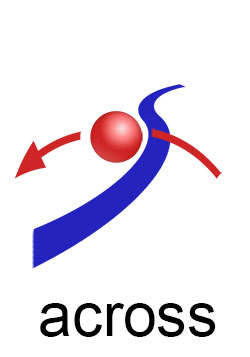
· _stxEngl: _stxSbj:[The red ball] _stxVrb:{bounce} _stxDirection:[(across) the blue line].
[https://www.englishpage.com/prepositions/direction_prepositions.htm]
name::
* McsEngl.across-space-direction,
* McsEngl.space-direction.across,
* McsEngl.across!~conjEngl!=rlnDirectionAcross,
* McsEngl.conjEngl.across!=rlnDirectionAcross,
* McsEngl.conjEngl.along!=rlnDirectionAlong,
* McsEngl.from-space-direction,
* McsEngl.rlnDirectionFrom,
* McsEngl.space-direction.from,
* McsEngl.conjEngl.from!=rlnDirectionFrom,
====== langoGreek:
* McsElln.από!~conjElln!=rlnDirectionFrom,
====== langoTurkish:
* McsTurk.-den!~ablative-suffix!=rlnDirectionFrom,
space.rltv.direction.from-to
description::
· _stxZhon: _stxSbj:[她] _stxDirection:[从 北京 到 西安] _stxVrb:{来} _stxGoal:[旅游] != She came from Beijing to Xi’an for traveling.
· _stxZhon: _stxSbj:[我] _stxManner:[(坐)飞机] _stxDirection:[(从)[上海](到)[北京]]_stxVrb:{去}。Wǒ zuò fēijī cóng shànghǎi dào běijīng qù. != [I] [by plain] [from Shanghai to Beijing] {go}.
name::
* McsEngl.from-to--direction!=rlnDirectionFromTo,
* McsEngl.from..to!~conjEngl!=rlnDirectionFromTo,
* McsEngl.rlnDirectionFromTo,
* McsEngl.space.direction.from-to!⇒rlnDirectionFromTo,
====== langoChinese:
* McsZhon.conjZhon.cónɡ..dào-从..到!=rlnDirectionFromTo,
* McsZhon.cónɡ..dào-从..到!~conjZhon!=rlnDirectionFromTo,
* McsZhon.从..到-cónɡ..dào!~conjZhon!=rlnDirectionFromTo,
space.rltv.direction.away-from
description::
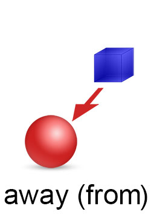
· _stxEngl: _stxSbj:[The red ball] _stxVrb:{is rolling} _stxDirection:[(away from) the blue box].
· _stxEngl: He walked away from me. has object "me"
· _stxEngl: He walked away. no object
[https://www.englishpage.com/prepositions/direction_prepositions.htm]
name::
* McsEngl.away-from-space-direction,
* McsEngl.space-direction.away-from,
* McsEngl.away-from!~conjEngl!=rlnDirectionAwayfrom,
* McsEngl.conjEngl.away-from!=rlnDirectionAwayfrom,
* McsEngl.rlnDirectionAwayfrom,
space.rltv.direction.from-speaker
description::
·
name::
* McsEngl.rlnDirectionFromSpeaker,
====== langoChinese:
* McsZhon.qù-去!=rlnDirectionFromSpeaker,
* McsZhon.去-qù!=rlnDirectionFromSpeaker,
space.rltv.direction.towards
description::
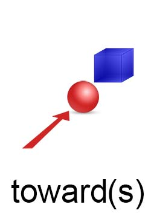
· _stxEngl: _stxSbj:[The red ball] _stxVrb:{is rolling} _stxDirection:[(towards) the blue box].
[https://www.englishpage.com/prepositions/direction_prepositions.htm]
· _stxEngl: [The crowds {became} violent] [(and) [{threw} [petrol bombs] [(at) the police]]]. [HarperCollins]
name::
* McsEngl.to-space-direction,
* McsEngl.towards-space-direction,
* McsEngl.space-direction.at,
* McsEngl.space-direction.to,
* McsEngl.space-direction.towards,
* McsEngl.to!~conjEngl!=rlnDirectionTowards,
* McsEngl.conjEngl.to!=rlnDirectionTowards,
* McsEngl.towards!~conjEngl!=rlnDirectionTowards,
* McsEngl.conjEngl.towards!=rlnDirectionTowards,
* McsEngl.rlnDirectionTowards,
space.rltv.direction.towards-speaker
description::
· _stxZhon: [他] _stxVrb:{走}[上][來] {了}。 tā zǒu shàng lái le. != [he] {walked} [up] [towards-me].
name::
* McsEngl.rlnDirectionTowardsSpeaker,
====== langoChinese:
* McsZhon.lái-来-(來)!=rlnDirectionTowardsSpeaker,
* McsZhon.来-(來)-lái!=rlnDirectionTowardsSpeaker,
space.rltv.direction.down
description::
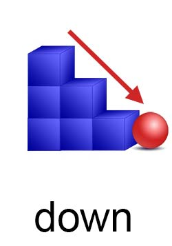
· _stxEngl: _stxSbj:[The red ball] _stxVrb:[is rolling] _stxDirection:[(down) the blue stairs].
[https://www.englishpage.com/prepositions/direction_prepositions.htm]
· _stxEngl: _stxSbj:[He] _stxVrb:{arranged} _stxObj:[for me] _stxObj:[to _stxVrb:{go} _stxDirection:[(down to) London] _stxTime:[one day a week]]. [HarperCollins]
name::
* McsEngl.down-space-direction,
* McsEngl.space-direction.down,
* McsEngl.down!~conjEngl!=rlnDirectionDown,
* McsEngl.conjEngl.down!=rlnDirectionDown,
* McsEngl.down-to!~conjEngl!=rlnDirectionDown,
* McsEngl.conjEngl.down-to!=rlnDirectionDown,
* McsEngl.conjEngl.up!=rlnDirectionUp,
* McsEngl.conjEngl.in!=rlnDirectionInto,
* McsEngl.space-direction.into,
* McsEngl.into!~conjEngl!=rlnDirectionInto,
* McsEngl.conjEngl.into!=rlnDirectionInto,
* McsEngl.conjEngl.out-of!=rlnDirectionOutof,
* McsEngl.conjEngl.off-of!=rlnDirectionOffof,
* McsEngl.conjEngl.over!=rlnDirectionOver,
* McsEngl.conjEngl.under!=rlnDirectionUnder,
* McsEngl.conjEngl.against!=rlnDirectionAgainst,
* McsEngl.conjEngl.around!=rlnDirectionAround,
* McsEngl.conjEngl.onto!=rlnDirectionOnto,
* McsEngl.conjEngl.through!=rlnDirectionThrough,
* McsEngl.rlnDirectionThrough,
space.relativeNo
description::
· relativeNo-space is space NOT defined in relation to another space.
name::
* McsEngl.space.relativeNo,
space.point
description::
· space-point is space we consider without structure.
name::
* McsEngl.point-space,
* McsEngl.space.point,
====== langoSinago:
* McsSngo.do-doto!=space.point,
space.pointNo (interval)
description::
· space-interval is space between|among space-points.
name::
* McsEngl.interval-space,
* McsEngl.space.interval,
====== langoSinago:
* McsSngo.do-dotoUoGo!=space.interval,
space.dimension1
description::
· distance is the-space with one dimension.
· the-space between two space-points.
name::
* McsEngl.1d-space!=distance,
* McsEngl.distance,
* McsEngl.one-dimension-space!=distance,
* McsEngl.space.dimension1!=distance,
* McsEngl.space1d!=distance,
====== langoSinago:
* McsSngo.do-fo!=distance,
====== langoGreek:
* McsElln.απόσταση!=distance,
distance.measure
description::
· length is-called the-measure of 1d-space.
name::
* McsEngl.distance.measure,
* McsEngl.length,
* McsEngl.space1d.measure,
====== langoSinago:
* McsSngo.do-fo-kao!=distance.measure,
====== langoGreek:
* McsElln.μήκος!το!=distance.measure,
distance.unit-of-measurement
description::
· unit-of-measurement of distance.
name::
* McsEngl.distance.unit-of-measurement!⇒UomDistance,
* McsEngl.UomDistance!=unit-of-measurement-of-distance,
* McsEngl.unit-of-length!⇒UomDistance,
UomDistance.SPECIFIC
description::
·
name::
* McsEngl.UomDistance.specific,
UomDistance.meter
description::
"The metre (or meter in US spelling; symbol: m) is the base unit of length in the International System of Units (SI). Since 2019, the metre has been defined as the length of the path travelled by light in vacuum during a time interval of 1/299792458 of a second, where the second is defined by a hyperfine transition frequency of caesium.[2]
The metre was originally defined in 1791 by the French National Assembly as one ten-millionth of the distance from the equator to the North Pole along a great circle, so the Earth's polar circumference is approximately 40000 km.
In 1799, the metre was redefined in terms of a prototype metre bar, the bar used was changed in 1889, and in 1960 the metre was redefined in terms of a certain number of wavelengths of a certain emission line of krypton-86. The current definition was adopted in 1983 and modified slightly in 2002 to clarify that the metre is a measure of proper length. From 1983 until 2019, the metre was formally defined as the length of the path travelled by light in vacuum in 1/299792458 of a second. After the 2019 redefinition of the SI base units, this definition was rephrased to include the definition of a second in terms of the caesium frequency ΔνCs. This series of amendments did not alter the size of the metre significantly – today Earth's polar circumference measures 40007.863 km, a change of 0.022% from the original value of exactly 40000 km, which also includes improvements in the accuracy of measuring the circumference."
| SI multiples of metre (m)
|
| Submultiples | | Multiples
|
| Value | SI symbol | Name | | Value | SI symbol | Name
|
| 10^−1 m | dm | decimetre | | 10^1 m | dam | decametre
|
| 10^−2 m | cm | centimetre | | 10^2 m | hm | hectometre
|
| 10^−3 m | mm | millimetre | | 10^3 m | km | kilometre
|
| 10^−6 m | μm | micrometre | | 10^6 m | Mm | megametre
|
| 10^−9 m | nm | nanometre | | 10^9 m | Gm | gigametre
|
| 10^−12 m | pm | picometre | | 10^12 m | Tm | terametre
|
| 10^−15 m | fm | femtometre | | 10^15 m | Pm | petametre
|
| 10^−18 m | am | attometre | | 10^18 m | Em | exametre
|
| 10^−21 m | zm | zeptometre | | 10^21 m | Zm | zettametre
|
| 10^−24 m | ym | yoctometre | | 10^24 m | Ym | yottametre
|
| 10^−27 m | rm | rontometre | | 10^27 m | Rm | ronnametre
|
| 10^−30 m | qm | quectometre | | 10^30 m | Qm | quettametre
|
[{2024-05-13 retrieved} https://en.wikipedia.org/wiki/Metre]
name::
* McsEngl.UomDistance.meter,
* McsEngl.meter-UomDistance,
* McsEngl.metre-UomDistance,
====== langoGreek:
* McsElln.μέτρο!το!=meter-UomDistance,
UomDistance.nautical-mile
description::
"Absolutely! Here's a breakdown of what a nautical mile is and why it's used:
**Nautical Mile**
* **Definition:** A unit of measurement used primarily in marine and air navigation. It is based on the circumference of the Earth.
* **Distance:** One nautical mile is equal to one minute of latitude. This translates to approximately:
* 1.852 kilometers
* 1.151 statute miles
* 6,076 feet
* **Why It's Used:** The Earth is a sphere, and lines of latitude curve as you move away from the equator. The nautical mile remains consistent for navigational purposes because it accounts for this curvature.
**Visual Representation**
[Image of A nautical mile on a globe along a line of latitude]
**Key Points**
* The nautical mile is slightly longer than a standard statute mile.
* Mariners and pilots use nautical miles to plot routes and calculate distances on charts.
* The term 'knot' refers to speed in nautical miles per hour."
[{2024-05-10 retrieved} https://gemini.google.com/app/c2550a86ebacfc35]
name::
* McsEngl.UomDistance.nautical-mile,
* McsEngl.nautical-mile,
distance.length-of-body
description::
· lenght-of-body is the-long horizontal distance of a-body.
name::
* McsEngl.distance.length-of-body,
* McsEngl.length-of-body,
====== langoGreek:
* McsElln.μήκος-σώματος!=length-of-body,
length.big
description::
"(adj) long (primarily spatial sense; of relatively great or greater than average spatial extension or extension as specified) "a long road"; "a long distance"; "contained many long words"; "ten miles long""
[{2021-12-07 retrieved} http://wordnetweb.princeton.edu/perl/webwn?s=long]
· _stxZhon: 密西西比 河 很 长。 :: _stxSbj:[Mìxīxībǐ[hé]] _stxSbjc:[hěn[zhǎng]]。 != [Mississippi river] [very long].
name::
* McsEngl.length.big!⇒long,
* McsEngl.long!~adjeEngl,
====== langoChinese:
* McsZhon.cháng-长!=long,
* McsZhon.长-cháng!=long,
====== langoGreek:
* McsElln.επίθετο.μακρύς!=-ύς-ιά-ύ!=long,
* McsElln.μακρύς!~adjeElln!=-ύς-ιά-ύ!=long,
length.small
description::
·
name::
* McsEngl.length.small,
distance.width-of-body
description::
· width-of-body is the-short horizontal distance of a-body.
name::
* McsEngl.breadth,
* McsEngl.depth,
* McsEngl.distance.width-of-body,
* McsEngl.width-of-body,
====== langoGreek:
* McsElln.πλάτος-σώματος!=width-of-body,
width.big
description::
"(adj) wide, broad (having great (or a certain) extent from one side to the other) "wide roads"; "a wide necktie"; "wide margins"; "three feet wide"; "a river two miles broad"; "broad shoulders"; "a broad river""
[{2021-12-07 retrieved} http://wordnetweb.princeton.edu/perl/webwn?s=wide]
=== kuān-宽!~adjeZhon!=widthBig:
· _stxZhon: 北京的马路很宽。 :: Běijīng de mǎlù hěn kuān. != Beijing's streets are wide.
name::
* McsEngl.adjeEngl.wide!=widthBig,
* McsEngl.wide!~adjeEngl!=widthBig,
* McsEngl.width.big,
* McsEngl.widthBig,
====== langoChinese:
* McsEngl.adjeZhon.kuān-宽!=widthBig,
* McsZhon.kuān-宽!~adjeZhon!=widthBig,
* McsZhon.宽-kuān!~adjeZhon!=widthBig,
====== langoGreek:
* McsElln.επίθετο.πλατύς!-ύς-ιά-ύ!=widthBig,
* McsElln.πλατύς!-ύς-ιά-ύ!~adjeElln!=widthBig,
width.small
description::
"(adj) narrow (not wide) "a narrow bridge"; "a narrow line across the page""
[{2021-12-07 retrieved} http://wordnetweb.princeton.edu/perl/webwn?s=narrow]
name::
* McsEngl.adjeEngl.narrow!=widthSmall,
* McsEngl.narrow!~adjeEngl!=widthSmall,
* McsEngl.width.small,
* McsEngl.widthSmall,
====== langoGreek:
* McsElln.επίθετο.στενός!-ός-ή-ό!=widthSmall,
* McsElln.στενός!-ός-ή-ό!~adjeElln!=widthSmall,
distance.height-of-body
description::
· height-of-body is the-vertical distance of a-body.
name::
* McsEngl.distance.height-of-body,
* McsEngl.height-of-body,
====== langoGreek:
* McsElln.ύψος-σώματος!=height-of-body,
height.big
description::
· height, definiteNo, big.
name::
* McsEngl.height.big!=heightLong,
* McsEngl.heightLong,
* McsEngl.adjeEngl.tall!=heightLong,
* McsEngl.tall!~adjeEngl!=heightLong,
====== langoChinese:
* McsZhon.gāo-高!=heightLong,
* McsZhon.高-gāo!=heightLong,
====== langoGreek:
* McsElln.επίθετο.ψηλός!-ός-ή-ό!=heightLong,
* McsElln.ψηλός!-ός-ή-ό!~adjeElln!=heightLong,
height.small
description::
· height, definiteNo, small.
· _stxZhon: 尼克 头发 短。 :: _stxSbj:[Níkè tóufǎ] _stxSbjc:[duǎn]。 != [Nick hair] [short]
· _stxZhon: 这条裙子 太短。 :: _stxSbj:[Zhè tiáo qúnzi] _stxSbjc:[tài duǎn]。 != [this skirt] [too short].
name::
* McsEngl.height.small!=heightShort,
* McsEngl.heightShort,
* McsEngl.short!=heightShort,
====== langoChinese:
* McsZhon.duǎn-短!=heightShort,
* McsZhon.短-duǎn!=heightShort,
====== langoGreek:
* McsElln.επίθετο.κοντός!-ός-ή-ό!=heightShort,
* McsElln.κοντός!-ός-ή-ό!~adjeElln!=heightShort,
space.dimension2
description::
"(n) surface (the extended two-dimensional outer boundary of a three-dimensional object) "they skimmed over the surface of the water"; "a brush small enough to clean every dental surface"; "the sun has no distinct surface""
[http://wordnetweb.princeton.edu/perl/webwn?s=surface]
name::
* McsEngl.2d-space,
* McsEngl.space.dimension2,
* McsEngl.space2d,
* McsEngl.surface,
* McsEngl.two-dimension-space,
====== langoSinago:
* McsSngo.do-tho!=surface,
====== langoGreek:
* McsElln.επιφάνεια,
space2d.measure
description::
· area is-called the-measure of 2d-space.
name::
* McsEngl.area,
* McsEngl.space2d.measure,
====== langoSinago:
* McsSngo.do-tho-kao!=surface.measure,
====== langoGreek:
* McsElln.εμβαδό,
space2d.Earth
description::
"(n) surface, Earth's surface (the outermost level of the land or sea) "earthquakes originate far below the surface"; "three quarters of the Earth's surface is covered by water""
[http://wordnetweb.princeton.edu/perl/webwn?s=surface]
name::
* McsEngl.Earth-surface,
* McsEngl.space2d.Earth,
address of Earth-surface
description::
· the-names of Earth-surface's points or intervals.
name::
* McsEngl.address-of-Earth-surface,
addressWpg::
* https://www.gps-coordinates.net/gps-coordinates-converter,
* https://what3words.com/about-us/: defines a-3-word-name on each 3m-square,
space.dimension3
description::
·
name::
* McsEngl.3d-space,
* McsEngl.three-dimension-space,
* McsEngl.tri-dimensional-space,
* McsEngl.space.dimension3,
* McsEngl.space3d,
====== langoSinago:
* McsSngo.do-to!=space3d,
====== langoGreek:
* McsElln.τριδιάστατος-χώρος,
space3d.measure
description::
· volume is-called the-measure of 3d-space.
name::
* McsEngl.3d-space.measure,
* McsEngl.volume,
====== langoSinago:
* McsSngo.do-to-kao!=space3d.measure,
====== langoGreek:
* McsElln.όγκος,
space.bay-gulf
description::
">bay vs gulf:
Bays and gulfs are both bodies of water that are partially enclosed by land, but there are some key differences between them:
**Size and Shape:**
* **Gulfs:** Generally larger and deeper than bays, often extending further inland. They tend to have a more pronounced curvature, resembling a horseshoe or crescent shape.
* **Bays:** Usually smaller and have a gentler inward curving coastline.
**Formation:**
* **Gulfs:** Primarily formed due to plate tectonics.
* **Bays:** Formed due to erosion, especially tidal erosion.
**Examples:**
* **Gulfs:** Gulf of Mexico, Persian Gulf, Gulf of California.
* **Bays:** Chesapeake Bay, Bay of Bengal, Hudson Bay.
**Additional Points:**
* Both bays and gulfs can be part of a larger sea or ocean.
* Bays are often more sheltered and protected from harsh ocean conditions, making them ideal for harbors and coastal settlements.
* Gulfs, with their larger size and more open nature, may experience greater exposure to ocean currents and weather patterns.
Let me know if you'd like more details on a specific aspect of bays or gulfs!"
[{2024-05-11 retrieved} https://gemini.google.com/app/061a12a9a281d294]
name::
* McsEngl.bay,
* McsEngl.gulf,
* McsEngl.space.009-bay-gulf,
* McsEngl.space.bay-gulf,
====== langoGreek:
* McsElln.κόλπος!ο!=bay-gulf,
space.canal
description::
"A canal is a man-made waterway that is constructed to allow the passage of boats or ships inland or to convey water for irrigation. Canals are often built to connect existing lakes, rivers, or oceans.
Some famous canals include:
* **The Panama Canal:** Connects the Atlantic and Pacific Oceans through the Isthmus of Panama.
* **The Suez Canal:** Connects the Mediterranean Sea to the Red Sea through the Isthmus of Suez.
* **The Grand Canal:** The longest canal in the world, located in China.
* **The Corinth Canal:** Connects the Gulf of Corinth with the Saronic Gulf in Greece.
Canals have played a crucial role in transportation and trade throughout history. They have facilitated the movement of goods and people across long distances, making them a vital part of infrastructure in many countries.
Canals are also used for irrigation, water supply, and leisure activities such as boating and fishing. They can also serve as important habitats for wildlife, providing food and shelter for a variety of species."
[{2024-05-11 retrieved} https://gemini.google.com/app/c99659f19ec9b6c8]
name::
* McsEngl.canal,
* McsEngl.space.008-canal,
* McsEngl.space.canal,
====== langoChinese:
* McsZhon.yùnhé-运河!=canal,
* McsZhon.运河-yùnhé!=canal,
space.canyon-gorge
description::
">canyon vs gorge:
Canyons and gorges are both deep, narrow valleys with steep sides, but there are some subtle differences:
* **Size:** Canyons are generally considered larger and wider than gorges.
* **Steepness:** Gorges tend to have steeper sides than canyons.
* **Formation:** Gorges are often formed by the erosive action of water, while canyons can be formed by various processes, including water erosion, tectonic activity, and volcanic activity.
* **Location:** Gorges can be found in various climates, while canyons are more commonly associated with arid or semi-arid regions.
**Terminology:**
* The term "canyon" is more commonly used in North America, particularly in the southwestern United States, due to the influence of Spanish.
* The term "gorge" is more frequently used in Europe and Oceania.
In everyday language, the terms "canyon" and "gorge" are often used interchangeably, and the distinction between the two is not always clear-cut.
Would you like me to elaborate on any of these points or provide examples of canyons and gorges?"
[{2024-05-11 retrieved} https://gemini.google.com/app/72c753d21ea337ee]
name::
* McsEngl.canyon,
* McsEngl.gorge,
* McsEngl.space.010-canyon-gorge,
* McsEngl.space.canyon-gorge,
space.cave
description::
"A cave, or cavern, is a natural void in the ground, specifically a space large enough for a human to enter. Caves often form by the weathering of rock and often extend deep underground. The word cave can also refer to smaller openings such as sea caves, rock shelters, and grottos.
**Formation**
Caves are formed by various geological processes, including:
* **Dissolution:** This is the most common process, particularly in limestone caves. Rainwater seeps through the ground, picking up carbon dioxide and forming a weak acid. This acid slowly dissolves the rock, creating cavities and passages over time.
* **Lava tubes:** These are formed when lava flows cool and solidify on the surface, while the molten lava beneath continues to flow. This leaves behind hollow tubes.
* **Erosion:** Water, ice, or wind can wear away rock, creating caves in cliffs, mountains, or along coastlines.
**Types of Caves**
* **Solutional Caves:** These are the most common type, formed in soluble rock like limestone or dolomite.
* **Lava Tubes:** Formed by volcanic activity.
* **Sea Caves:** Formed by wave action along coastlines.
* **Glacier Caves:** Formed within or beneath glaciers.
**Features of Caves**
Caves often contain unique geological features, such as:
* **Stalactites:** These are icicle-shaped formations hanging from the ceiling of a cave.
* **Stalagmites:** These are formations rising from the floor of a cave, often directly beneath a stalactite.
* **Columns:** These are formed when a stalactite and stalagmite join together.
**Significance**
Caves have been important to humans throughout history, providing shelter, resources, and a canvas for art. Today, caves are explored and studied by scientists, adventurers, and tourists alike. They offer a glimpse into the Earth's geological past and a unique habitat for diverse organisms."
[{2024-05-12 retrieved} https://gemini.google.com/app/0bcd2076d55583ba]
name::
* McsEngl.cave,
* McsEngl.space.011-cave,
* McsEngl.space.cave,
====== langoChinese:
* McsZhon.dòngxué-洞穴!=cave,
* McsZhon.洞穴-dòngxué!=cave,
====== langoGreek:
* McsElln.σπήλαιο!το!=cave,
space.desert
description::
"A desert is a barren area of land characterized by extremely high or low temperatures, with hostile conditions for plant and animal life. Deserts receive very little precipitation, less than 250 mm (10 in) per year.
There are four main types of deserts:
* **Hot and dry deserts:** These deserts are characterized by hot summers and cold winters. They have very little rainfall, and the vegetation is sparse. Examples include the Sahara Desert in Africa and the Arabian Desert in the Middle East.
* **Semiarid deserts:** These deserts receive more rainfall than hot and dry deserts, but still less than 250 mm (10 in) per year. They have a wider variety of vegetation than hot and dry deserts, and the temperatures are not as extreme. Examples include the Great Basin Desert in North America and the Patagonian Desert in South America.
* **Coastal deserts:** These deserts are located along coastlines, and they receive fog and mist from the ocean. The temperatures are moderate, and the vegetation is sparse. Examples include the Atacama Desert in Chile and the Namib Desert in Namibia.
* **Cold deserts:** These deserts are located in high latitudes or high altitudes. They have long, cold winters and short, cool summers. The precipitation is mostly snow, and the vegetation is sparse. Examples include the Gobi Desert in Asia and the Antarctic Polar Desert."
[{2024-05-12 retrieved} https://gemini.google.com/app/056d8532c0e8c8cb]
name::
* McsEngl.desert,
* McsEngl.space.012-desert,
* McsEngl.space.desert,
====== langoChinese:
* McsZhon.shāmò-沙漠!=desert,
* McsZhon.沙漠-shāmò!=desert,
====== langoGreek:
* McsElln.έρημος!η!=desert,
space.grassland
description::
"Grassland is a large, open area of country covered with grass, especially one used for grazing. It is a biome where grasses are the dominant vegetation. Trees and large shrubs are absent, though smaller shrubs may be present. There are two main kinds of grasslands: tropical and temperate.
Grasslands occur naturally on all continents except Antarctica and are found in most ecoregions of the Earth. Furthermore, grasslands are one of the largest biomes on Earth and dominate the landscape worldwide.
There are different types of grasslands:
* **Natural grasslands:** These are grasslands that have not been significantly modified by human activity.
* **Semi-natural grasslands:** These are grasslands that have been modified by human activity, such as grazing or mowing, but still retain many of their natural characteristics.
* **Agricultural grasslands:** These are grasslands that are used for agricultural purposes, such as grazing livestock or growing crops.
Grasslands are important for a variety of reasons. They provide habitat for a wide range of animals, including grazing animals such as bison, zebras, and wildebeest, as well as predators such as lions, cheetahs, and wolves. Grasslands also play an important role in the carbon cycle, as they store large amounts of carbon in the soil. Additionally, grasslands are important for human activities such as grazing livestock and growing crops."
[{2024-05-12 retrieved} https://gemini.google.com/app/8adf7b1148879c02]
name::
* McsEngl.grassland,
* McsEngl.space.013-grassland,
* McsEngl.space.grassland,
====== langoChinese:
* McsZhon.cǎoyuán-草原!=grassland,
* McsZhon.草原-cǎoyuán!=grassland,
====== langoGreek:
* McsElln.βοσκότοπος!ο!=grassland,
* McsElln.λιβάδι!το!=grassland,
space.hill
description::
"A hill is alandform that rises above the surrounding terrain. It is typically smaller than a mountain. There are many hills in Greece, some of the most famous include:
* **Filopappou Hill:** Located in Athens, it offers views of the Acropolis and the city.
* **Lycabettus Hill:** Also in Athens, it is the highest point in the city and offers panoramic views.
* **Thessaloniki Hills:** There are seven hills surrounding Thessaloniki, each with its own unique character.
Do you want to know more about a specific hill or the types of hills found in Greece? "
[{2024-05-12 retrieved} https://gemini.google.com/app/c2f5ea8e01fdcae1]
name::
* McsEngl.hill,
* McsEngl.space.014-hill,
* McsEngl.space.hill,
====== langoChinese:
* McsZhon.shān-山!=hill,
* McsZhon.山-shān!=hill,
* McsZhon.xiǎoqiū-小丘!=hill,
* McsZhon.小丘-xiǎoqiū!=hill,
====== langoGreek:
* McsElln.λόφος!ο!=hill,
space.island
description::
"An island or isle is any piece of subcontinental land that is surrounded by water.[1] Very small islands such as emergent land features on atolls can be called islets, skerries, cays or keys. An island in a river or a lake island may be called an eyot or ait, and a small island off the coast may be called a holm. Sedimentary islands in the Ganges delta are called chars. A grouping of geographically or geologically related islands, such as the Philippines, is referred to as an archipelago."
[{2021-09-29 retrieved} https://en.wikipedia.org/wiki/Island]
name::
* McsEngl.island,
* McsEngl.space.004-island,
* McsEngl.space.island,
====== langoChinese:
* McsZhon.dǎo-岛!=island,
* McsZhon.岛-dǎo!=island,
====== langoGreek:
* McsElln.νησί!το!=island,
space.air
description::
"Airspace is the portion of the atmosphere controlled by a country above its territory, including its territorial waters. It is not the same as outer space, which is the expanse outside the Earth's atmosphere.
Airspace is divided into different classes:
* **Class A:** Generally, the airspace from 18,000 feet mean sea level (MSL) up to and including flight level (FL) 600. All operations in Class A airspace are conducted under instrument flight rules (IFR).
* **Class B:** Airspace surrounding the busiest airports, from the surface to 10,000 feet MSL.
* **Class C:** Airspace surrounding airports that are busy, but not as busy as Class B airports.
* **Class D:** Airspace surrounding airports with operational control towers.
* **Class E:** Controlled airspace not classified as A, B, C, or D.
* **Class G:** Uncontrolled airspace.
Different rules and regulations apply to each class of airspace. It is important for pilots to be familiar with these rules to ensure the safety of flight."
[{2024-05-12 retrieved} https://gemini.google.com/app/68b4e493d1272af1]
name::
* McsEngl.space.019-air!⇒airspace,
* McsEngl.space.air!⇒airspace,
* McsEngl.airspace,
space.land
description::
"The term "land" has several definitions depending on the context:
1. **Geography**: Land refers to the part of the earth's surface that is not covered by water, as opposed to the sea or air. It includes mountains, valleys, plains, and other topographical features.
2. **Real Estate**: In real estate, land means the surface of the earth, extending downward to the center of the earth and upward to the sky, including all things permanently attached naturally or artificially.
3. **Agriculture**: In agriculture, land pertains to the material of the earth, whether soil or rock, that is used for the purposes of farming to grow crops and rear animals.
4. **Legal**: From a legal perspective, land can include the earth’s surface, subsoil, airspace, and any buildings or structures on it. Ownership of land typically confers rights to use, rent, or sell it.
5. **Economic**: Economically, land is considered one of the fundamental factors of production, used to produce goods and services.
If you need information specific to any of these contexts or another meaning of "land," feel free to ask!"
[{2024-05-12 retrieved} https://chatgpt.com/c/4764a2c0-2b79-4855-b36d-212206f74eda]
name::
* McsEngl.space.020-land!⇒landspace,
* McsEngl.space.land!⇒landspace,
* McsEngl.landspace,
space.water
description::
·
name::
* McsEngl.space.021-water!⇒waterspace,
* McsEngl.space.water!⇒waterspace,
* McsEngl.waterspace,
space.landscape
description::
"A landscape is the visible features of an area of land, its landforms, and how they integrate with natural or human-made features. It often refers to the aesthetic appeal of an area.
The term can be used to describe:
* **Natural scenery:** such as mountains, hills, valleys, rivers, lakes, forests, and coastlines.
* **Rural scenery:** such as fields, farms, and villages.
* **Urban scenery:** such as cityscapes, parks, and gardens.
* **A picture or painting of a landscape:** such as a landscape painting or photograph.
The term "landscape" can also be used as a verb, meaning to modify the features of a piece of land to make it more aesthetically pleasing. This is often done by planting trees, shrubs, and flowers, or by creating water features.
Landscapes are important for a variety of reasons. They provide us with a sense of place and identity, and they can be a source of inspiration and beauty. They also play an important role in the environment, providing habitat for wildlife and helping to regulate the climate."
[{2024-05-12 retrieved} https://gemini.google.com/app/b3dea3452d4992b7]
name::
* McsEngl.landscape,
* McsEngl.space.018-landscape,
* McsEngl.space.landscape,
====== langoGreek:
* McsElln.τοπίο!το!=landscape,
space.lake
description::
"A lake is a large body of water surrounded by land. Lakes can be found in a variety of locations, from high in the mountains to low in valleys. They are formed by a variety of processes, including glacial activity, volcanic activity, and tectonic activity.
Lakes are important ecosystems that provide habitat for a variety of plants and animals. They are also used for recreation, irrigation, and drinking water. Some of the largest lakes in the world include the Caspian Sea, Lake Superior, and Lake Victoria."
[{2024-05-11 retrieved} https://gemini.google.com/app/17e392ca6f249171]
name::
* McsEngl.lake,
* McsEngl.space.001-lake,
* McsEngl.space.lake,
====== langoChinese:
* McsZhon.hú-湖!=lake,
* McsZhon.湖-hú!=lake,
====== langoGreek:
* McsElln.λίμνη!η!=lake,
space.mountain
description::
· _stxZhon: _stxSbj:[中国] _stxObj:[有] _stxSbjc:[很多大[山]]。 Zhōngguó yǒu hěnduō dàshān. != [China] {has} [many big mountains].
name::
* McsEngl.mountain,
* McsEngl.space.002-mountain,
* McsEngl.space.mountain,
====== langoChinese:
* McsZhon.shān-山!=mountain,
* McsZhon.山-shān!=mountain,
====== langoGreek:
* McsElln.βουνό!το!=mountain,
space.ocean
description::
">sea vs ocean:
The terms "sea" and "ocean" are often used interchangeably, but they have distinct meanings in geography:
1. **Ocean**: An ocean is a vast body of saltwater that covers a large part of the Earth's surface. There are five recognized oceans: the Pacific, Atlantic, Indian, Southern (or Antarctic), and Arctic Oceans. Oceans are the largest bodies of water on the planet.
2. **Sea**: A sea is generally smaller than an ocean and is usually located where the land and ocean meet. Typically, seas are partially enclosed by land. Examples include the Mediterranean Sea, the Caribbean Sea, and the South China Sea. Seas are often found on the margins of the ocean and are partially enclosed by land.
In essence, seas are smaller and may be part of or connected to an ocean, whereas oceans are vast and open and not enclosed by land."
[{2024-05-11 retrieved} https://chatgpt.com/c/ad970da0-249d-4c28-833b-009bb6713a5e]
name::
* McsEngl.ocean,
* McsEngl.space.005-ocean,
* McsEngl.space.ocean,
====== langoChinese:
* McsZhon.yáng-洋!=ocean,
* McsZhon.洋-yáng!=ocean,
====== langoGreek:
* McsElln.ωκεανός!ο!=ocean,
space.peninsula
description::
"A peninsula is alandform surrounded by water on three sides. Some famous peninsulas include:
* **Peloponnese:** This is the largest peninsula in Greece, connected to the mainland by the Isthmus of Corinth.
* **Halkidiki:** Located in northern Greece, Halkidiki is known for its three "legs" or smaller peninsulas.
* **Attica:** Athens, the capital of Greece, is located on the Attica peninsula.
* **Iberian Peninsula:** This large peninsula in southwestern Europe includes Spain and Portugal.
* **Italian Peninsula:** Shaped like a boot, this peninsula is home to Italy.
Please let me know if you'd like more information on any of these!"
[{2024-05-12 retrieved} https://gemini.google.com/app/db20f351edba64d5]
name::
* McsEngl.peninsula,
* McsEngl.space.015-peninsula,
* McsEngl.space.peninsula,
====== langoChinese:
* McsZhon.pàndǎo-半岛!=peninsula,
* McsZhon.半岛-pàndǎo!=peninsula,
====== langoGreek:
* McsElln.χερσόνησος!η!=peninsula,
space.river
description::
"(n) river (a large natural stream of water (larger than a creek)) "the river was navigable for 50 miles""
[{2021-12-07 retrieved} http://wordnetweb.princeton.edu/perl/webwn?s=river]
· _stxZhon: 黄河 在 中国。 :: _stxSbj:[Huánghé]_stxSpace:[(zài)zhōngguó]。 != [Yellow river] [(in) China]
name::
* McsEngl.river,
* McsEngl.space.003-river,
* McsEngl.space.river,
====== langoChinese:
* McsZhon.hé-河!=river,
* McsZhon.河-hé!=river,
====== langoGreek:
* McsElln.ποτάμι!το!=river,
space.sea
description::
">sea vs ocean:
The terms "sea" and "ocean" are often used interchangeably, but they have distinct meanings in geography:
1. **Ocean**: An ocean is a vast body of saltwater that covers a large part of the Earth's surface. There are five recognized oceans: the Pacific, Atlantic, Indian, Southern (or Antarctic), and Arctic Oceans. Oceans are the largest bodies of water on the planet.
2. **Sea**: A sea is generally smaller than an ocean and is usually located where the land and ocean meet. Typically, seas are partially enclosed by land. Examples include the Mediterranean Sea, the Caribbean Sea, and the South China Sea. Seas are often found on the margins of the ocean and are partially enclosed by land.
In essence, seas are smaller and may be part of or connected to an ocean, whereas oceans are vast and open and not enclosed by land."
[{2024-05-11 retrieved} https://chatgpt.com/c/ad970da0-249d-4c28-833b-009bb6713a5e]
name::
* McsEngl.sea,
* McsEngl.space.006-sea,
* McsEngl.space.sea,
====== langoChinese:
* McsZhon.hǎi-海!=sea,
* McsZhon.海-hǎi!=sea,
====== langoGreek:
* McsElln.θάλασσα!η!=sea,
space.valley
description::
"A valley is an elongated depression of the Earth's surface, usually between ranges of hills or mountains. It is typically formed by the erosional action of rivers or glaciers over long periods.
Valleys can vary greatly in size, shape, and geological characteristics. Some are narrow and steep-sided, while others are broad and gently sloping. They are often important for human settlement and agriculture, as they can provide fertile soil, water resources, and transportation routes.
Here are some of the different types of valleys:
* **V-shaped valleys:** These are typically formed by rivers, with steep sides and a narrow bottom.
* **U-shaped valleys:** These are formed by glaciers, with a wider bottom and less steep sides than V-shaped valleys.
* **Flat-floored valleys:** These are formed when rivers deposit sediment on the valley floor, creating a wide, flat area.
* **Rift valleys:** These are formed by tectonic processes, where the Earth's crust is pulled apart.
* **Hanging valleys:** These are smaller valleys that join a main valley at a higher elevation, often with waterfalls.
Valleys are important features of the Earth's landscape, and they play a significant role in the lives of humans and other organisms."
[{2024-05-12 retrieved} https://gemini.google.com/app/9d6ad20498288b0a]
name::
* McsEngl.space.016-valley,
* McsEngl.space.valley,
* McsEngl.valley,
====== langoChinese:
* McsZhon.gǔ-谷!=valley,
* McsZhon.谷-gǔ!=valley,
====== langoGreek:
* McsElln.κοιλάδα!η!=valley,
space.volcano
description::
"A volcano is a rupture in the crust of a planetary-mass object, such as Earth, that allows hot lava, volcanic ash, and gases to escape from a magma chamber below the surface.
On Earth, volcanoes are most often found where tectonic plates are diverging or converging, and most are found underwater. For example, a mid-ocean ridge, such as the Mid-Atlantic Ridge, has volcanoes caused by divergent tectonic plates, whereas the Pacific Ring of Fire has volcanoes caused by convergent tectonic plates.
Volcanoes can be classified in several ways, including by their eruptive style, their morphology, and their tectonic setting. The most common type of volcano is the stratovolcano, a conical mountain composed of layers of lava and ash.
Volcanoes can have a significant impact on the environment and human populations. Volcanic eruptions can cause widespread destruction, and volcanic ash can pose a health hazard. However, volcanoes also play a role in the formation of new land and the creation of fertile soil."
[{2024-05-12 retrieved} https://gemini.google.com/app/821d01dd071e51d7]
name::
* McsEngl.space.017-volcano,
* McsEngl.space.volcano,
* McsEngl.volcano,
====== langoChinese:
* McsZhon.huǒshān-火山!=volcano,
* McsZhon.火山-huǒshān!=volcano,
====== langoGreek:
* McsElln.ηφαίστειο!το!=volcano,
space.waterfall
description::
"A waterfall is a point in a river or stream where water flows over a vertical drop or a series of steep drops.
Waterfalls are formed through various processes, including:
* **Erosion:** The wearing away of earth and rock by water and ice.
* **Fault lines:** Cracks in the Earth's surface can create sudden drops in elevation.
* **Glacial activity:** Melting glaciers can leave behind hanging valleys with waterfalls.
Waterfalls can be found all over the world, and they vary greatly in size and appearance. Some of the most famous waterfalls include Niagara Falls, Victoria Falls, and Angel Falls.
Waterfalls are popular tourist destinations, and they are often used for hydroelectric power generation. They are also important ecological habitats, providing homes for a variety of plant and animal species."
[{2024-05-11 retrieved} https://gemini.google.com/app/8cd791cd672ceef0]
name::
* McsEngl.space.007-waterfall,
* McsEngl.space.waterfall,
* McsEngl.waterfall,